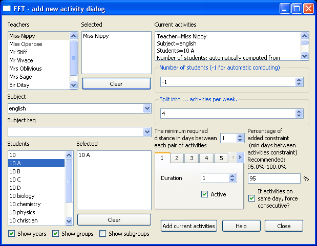

FET Manual
Version 0.7a
last modified 10.01.2009
FET written by Liviu Lalescu
http://www.lalescu.ro/liviu/
Manual written by Volker Dirr
http://www.timetabling.de/
FET Homepage
http://www.lalescu.ro/liviu/fet/
FET is free software for automatically scheduling the timetable of a school, high-school or university. It uses a fast and efficient timetabling algorithm. It is free software, open source, licensed under GNU/GPL. Get the latest news and version from the official FET homepage (http://www.lalescu.ro/liviu/fet/).
This is a small manual with hopefully a lot of useful examples.
Important definitions are marked blue.
Useful hints are marked green.
Critical warnings are marked red.
Wise examples are marked yellow.
Liviu Lalescu (http://www.lalescu.ro/liviu/) started his project at the end of year 2002 as he was working on his diploma. He got his examination in computer programming (software specialization) in June 2003. FET had a very large palette of constraints, but sadly the evolutionary algorithm was only able to solve easy timetables. Even great efforts during the following years in research the genetic algorithm was never good enough to solve complex timetables. In summer 2007 the big breakthrough was done. A new heuristic algorithm (based on recursive swapping of activities) was able to solve difficult timetables in a few minutes.
There are a lot of nice features. FET is able to automatically care about all groups (classes/courses/students), has a very large palette of constraints and of course nice styleable xhtml timetables.
|
|
TODO: requirements TODO: same like readme. (really write it twice? Maybe short the readme and write long version here?) TODO: command line using FET
Even FET is a tidy Qt-application, you should read this manual carefully, because it includes many hints and warnings how to use it correct.
Of course it's possible to open and save a file.
FET doesn't have a option to print in this menu. The timetables will be written into the results directory after a timetable is generated. Please read chapter Print timetables if you want to know how to print a timetable.
Save your dataset regularly. Especially if you add or modify constraints. FET doesn't have a undo option right now. Sometimes it's very difficult to undo the last modification. Also if FET didn't find a solution after several hours you maybe want to undo but already forgot last changes.
The saved dataset contain only the Basic settings, Activities and Constraints.
It doesn't include the generated timetable solution.
You need to do Timetable → Save data+timetable as ... if you want to save the generated timetable.
The generated timetable is also saved by default into the results directory if you use Timetable → Generate multible variants.
The data contain the Basic settings, Activities and Constraints. It doesn't include the generated timetable solution.
Institution name and comments are optional data.
The institution name will be printed as caption to all small timetables (but you can still style and hide it easily later).
Comments will be printed at the beginning of the timetables (before table of content).
Use the comment to write about problems, latest added constraint, missing constraint or constraints that should be modified. Don't forget to update regularly the comments. An old comment is as bad as a missing or wrong comment.
Most schools just need days from Monday to Friday.
This terms are printed into the timetable head. Use short cuts to get smaller tables. (MON instead of Monday, TUE ...).
| Example 1 | Example 2 | Example 3 | Example 4 | Example 5 |
|---|---|---|---|---|
| 1st Period 2nd Period 3th Period 4th Period 5th Period 6th Period |
Period 1 Period 2 Period 3 Period 4 Period 5 Period 6 |
1 2 3 4 5 6 |
08.05 – 08.50 08.50 – 09.35 10.00 – 10.45 10.50 – 11.35 11.50 – 12.35 12.35 – 13.20 |
08.05 08.50 10.00 10.50 11.50 12.35 |
A Period is a distance in time.
The periods are printed into the timetable. So use short cuts to get smaller timetables. You can use any phrase as period name.
You have to care about that every period has the same distance (is as long as every other period), because FET take always duration 1 per period.
(Except if you add a period that always get special activities or a break. In example 4 a period 09.35-10.00 can be added and this period always get the constraint break. But that is only a cosmetic intrusion.)
So by this example an activity with duration 1 take 45 minutes and an activity with duration 2 take 90 minutes.
Activities can not get non-integer duration like 1.5.
If FET cannot find a solution you should think about increasing the number of periods or the number of days. If FET is able to solve your dataset easily and you don't know other constraints to add you should maybe think about decreasing number of periods or number of days. But you should rethink about all constraints again! (Especially Not available teachers, students or rooms constraints.)
Add teachers, subject, activity tags, rooms and buildings.
Also these names are printed into the timetable. So use short cuts to get smaller timetables.
A activity tag is an optional information to an activity.
Activity tags are for example lecture (reading), exercise or laboratory.
If activities with duration 2 must start in odd periods (1st, 3th, 5th, ...) the activity tag might be odd.
If some activities must (or should) be instructed only in the morning the activity tag might be morning.
Think at least twice before using activity tags. I recommend to use activity tags only to set constraints. Try to set constraint as long as (easily) possible without an activity tag. Activity tags are very powerful, but every activity has only one tag.
You don't need to add home rooms. Normally every group (class or teacher) has it's own home room. There will never be a room conflict if every group has it's own room. Add only rooms that could have a conflict (arts room, gym, science lab, ...) or if you have more groups than rooms.
Every room has capacity 1. So only one activity can be placed per room. If you have a huge gym (that maybe can be separated into 3 parts by curtains), then enter 3 rooms for the gym.
You don't need to add buildings. Add only buildings if you want to use a buildings constraint (like Max building changes per day or Min gaps between building changes.)
If you need to add different buildings you also need to care about global clear room names. If you have room name 123 in building A, then you can't name a room 123 in building B too. So i recommend to include the building name into the room name. For example room 123 in building A should get the name A-123.
It's very important to understand the difference between years, groups, subgroups, classes, courses, divisions and categories. But it's not very easy. Please read definitions and all examples.
Year (form): A set of students at the same stage of their schooling. For example a German primary school has years 1 to 4. A year contain (in most cases) several groups (classes).
Group, Class, course and division: A set of students who visit the same activities. So they meet the same teachers to study the same subjects at the same time.
Category: A set of groups that might have activities simultaneously.
| course | subject (duration) |
|---|---|
| Biology Chemistry Physics |
Biology (4), chemistry (1), physics (2) Biology (1), chemistry (4), physics (2) Biology (2), chemistry (1), physics (4) |
Course (division of the second category): A set of students who meet (sometimes) the same activities.
Be careful if you have a (nearly) 100% filled timetable. This activities are scheduled simultaneously if the timetable is 100% filled. So if you do the activity planing you have to be sure that the timetable is solvable. In this example the duration of a course is 4+1+2=7. So it's impossible that all physics activities are instructed by the same teacher because physics has total duration 2+2+4=8. But if physics in the physics course is instructed by a different teacher then in the other courses, then this courses are possible.
It doesn't matter in this example if the physics course get only biology duration 1. FET is able to care about that, even the duration is different between the courses.
Your can add a second set of courses by using category 3.
You can add a third set of courses by manually doing the same like divide year automatically by selecting categories, but it's a little bit tricky. In some cases you don't need to add a new category (read next hint).
| course | subject (duration) |
|---|---|
| christian religion jewish religion muslim religion philosophy |
christian religion (2) jewish religion (2) muslim religion (2) philosophy (2) |
Think about needed categories first. The first category should always be the class. The second and third category should be the categories with the longest total duration. Other categories must be done manually or by the hint simultaneous activities.
Maybe you know that (by accident) no students is in Group 10A and 10Bio at the same time. You can delete the corresponding subgroups. You maybe get better timetables by this. But you need to do it only if your timetable is not 100% filled. Be careful! This also mean you (maybe) cannot put a students with group 10Bio into 10A later. You maybe get new students (because parents moved house). So I highly don't recommend this!
Before adding activities you need to do a planning. Currently FET doesn't help you with this. So you already need to think about all activities. Has every students the correct number of activities (subject and duration)? Has every teacher the correct number of activities (duration)? Is it possible that activities of courses are simultaneously? (Think about teachers and rooms!)
 To add an activity you just need to add (double click with the mouse, or select and press enter) students, subject and teachers. Normally an activity contain 1 teacher, 1 group and 1 subject. You should always enter the number of hours that this activity is instructed. The Min n days between a set of activities constraint is one of the most important constraints. So this constraint is added by default if you add more then one (sub-)activity.
Please read section Weights of constraints and Min n days between a set of activities.
It's allowed to add pseudo activities. Pseudo activities doesn't include a students set or a teachers set. Sounds stupid, but they are useful to care about some constraints. Compare sections Not available teachers, students or rooms & breaks, Gaps, Preferred time(s) and Preferred room(s).
Check the statistics after all activities are added.
There are two big possibilities to add activities that take place once every two weeks.
The recommended one is to use one of the following workarounds.
The other one is to do it on a very exact way.
The advantage of the workarounds is a very simple input of the activities.
The disadvantage is that you might not get the best timetable and it's not easy to differ fortnightly activities from regular activities in the printed timetable.
All workarounds based on a simple idea: Just add a fortnightly activity as a regular activity and call the students and teachers that this activity is only instructed every second week.
If students are not allowed to have gaps, then fortnightly activities should get constraint activity ends day or constraint preferred time(s) with first periods as preferd times. If students also need constraint students early, then you should only use constraint activity ends day.
Be careful if you have room problems. In many cases Home room(s) will not care about fortnightly activities. You need to use a Preferred room(s) constraint.
Team teaching mean two or more teachers instruct one group in the same period.
Be careful if you have room problems. In many cases Home room(s) will not care about team teaching activities. You need to use a Preferred room(s) constraint.
| weight | average no. of retries |
|---|---|
| 50% 75% 80% 90% 95% 99% 99.5% 99.75% 99.80% 99.90% 99.99% 100.00% |
2 4 5 10 20 100 200 400 500 1000 10000 unlimited |
Every constraint has a weight. A weight of 100% mean that this constraint must be respected.
A lower value mean it should be respected, it's not necessary.
It's pretty difficult to explain the exact function, but a simple illustration is the following:
50% weight mean that in average FET retries two times to place an activity without a conflict.
If FET isn't able to place the activity without a conflict after average 2 times it keeps the conflict and tries to place the next activity.
This is not an exact explanation of the algorithm, because the activities might get unallocated or cycle reopened.
Always save the datafile under a different name (just number them) after adding or modifying a constraint.
Check if your timetable is (still) solvable before adding new constraints. It might be impossible to solve the timetable.
The basic constraints are:
Time constraints (misc) → Basic compulsory time constraints
Space constraints (misc) → Basic compulsory space constraints
This basic constrains must have weight 100% and must always be included in the dataset.
The basic time constraints care about that a teacher never has to instruct two or more activities at the same time. Also students must have maximum one activity per period.
The basic rooms constraints care about that a room will never have included 2 or more activities.
The not available and break constraints are:
Time constraints (teachers) → A teacher is not available
Time constraints (students) → A students set is not available
Space constraints (rooms) → A room is not available
Time constraints (misc) → Break (all teachers+all students not available)
It might happen that teachers, students or rooms are not available.
This constraints must have weight 100%.
If a teacher or student has constraint Not available, then this "free" period might be a gap. So think twice if you also use constraints that count gaps. Instead of using constraint Not available to a teacher or student you can also add a pseudo activity and use constraint An activity has a preferred starting time. A pseudo activity will not counted as gap.
Constraint break is a easy way to say that all teachers and students are not available.
This constraint is:
Time constraints (activities) → Min n days between a set of activities
Read also section Add an activity.
| course | subject (duration) |
|---|---|
| nature science industrial art foreign language |
biology (2), chemistry (2), physics (2) industrial art (6) French (4), Latin (2) |
If you do your cover planing you must also carefully think about constraint Min n days between a set of activities (Normally not in the classes (category 1), but in the courses (category 2 and above)).
The max & min periods per day constraints are:
Time constraints (teachers) → Max hours daily for a teacher
Time constraints (teachers) → Max hours daily for all teachers
Time constraints (teachers) → Min hours daily for a teacher
Time constraints (teachers) → Min hours daily for all teachers
Time constraints (students) → Max hours daily for a students set
Time constraints (students) → Max hours daily for all students
Time constraints (students) → Min hours daily for a students set
Time constraints (students) → Min hours daily for all students
Constraints max and min periods per day for students are useful if you want a balanced day.
| Group | activities per week |
|---|---|
| 1A, 1B 2A, 2B 3A, 3B 4A, 4B |
20, 19 21, 20 25, 24 30, 29 |
Instead of using max periods per day you can use preferred time(s). It's not the same (it's only the same if you also use constraint no gaps and students early), but very similar, faster and (maybe) a little bit more powerful.
You can do it similar to teachers, but think always twice. In my opinion the max periods per day constraint is only useful if your institutions has many periods per day.
The min periods daily constraint for a teacher is (in my opinion) not always useful. Before using this constraints you should do this: Use constraint max periods per day to get a more balanced timetable. Think about using constraint max days per week for every single teacher. It's maybe much better, because it has a rough effect and the teacher don't need to drive to the institution.
In many schools it is not allowed that activities are omitted. If impeded teachers must be represented by other teachers you might get big trouble if you add to many min periods daily constraint for teachers, because there might be not enough teachers to cover activities. Please read chapter Teachers' Free Periods.
The max days per week constraints is:
Time constraints (teachers) → Max days per week for a teacher
Of course if the contract of employment guarantee a max number of days per week, then this is an important constraint.
A timetable is not solvable if you add constraint max days per week with only 3 days and weight 100% if the same teacher instruct a set of 4 or more activities that have constraint Min n days between a set of activities with weight 100%. Be careful! Most activities have this constraint (compare Add an activity).
I recommend to check this constraint again after all other constraint are added, most of them already have weight 100% and FET is still able to find a solution.
Most teacher like a free day. Check the teacher statistics. Check if a teacher is able to (maybe) get free day. So the number of periods per day of the teacher must be lower or equal then the number of periods per week of the timetable minus the number of periods per day. Also check if a lower number of working days doesn't controvert to a constraint (especially a constraint Min n days between a set of activities). Add constraint Max days per week for a teacher with weight 100% if nothing argue against it. Don't add to many constraint at one time. Maybe begin with the teacher that instruct the lowest number of periods per week. Check if the timetable is still solvable. Add the next teacher if it is still solvable. Remove the constraint if the timetable is not solvable and try to add the following teacher.
In many schools it is not allowed that activities are omitted. If impeded teachers must be represented by other teachers you might get big trouble if you add to many free days, because there might be not enough teachers to cover activities. Please read chapter Teachers' Free Periods.
If you need constraint like max days per week for students set just add an activity with the students set, subject “free”, no teacher and the number of periods per day of your timetable as duration.
If you need constraint like max days per week for students set you can think about effecting similar with constraint Min hours daily for a students set.
If you need constraint like max days per week for all teachers you can think about effecting similar with constraint Min hours daily for all teachers.
The max gaps constraints are:
Time constraints (teachers) → Max gaps per week for a teacher
Time constraints (teachers) → Max gaps per week for all teachers
Time constraints (teachers) → Max gaps per day for a teacher
Time constraints (teachers) → Max gaps per day for all teachers
Time constraints (students) → Max gaps per week for a students set
Time constraints (students) → Max gaps per week for all students
Use weight 100% and start with a high Max gaps per week for all teachers value. Try to solve the timetable and decrease the value step by step.
In many schools it is not allowed that activities are omitted. If impeded teachers must be represented by other teachers you might get big trouble if you add to "good" gap constraints, because there might be not enough teachers to cover activities. Please read chapter Teachers' Free Periods.
It sound fair if you use Max gaps per week for all teachers instead of different values to every single teacher by constraint Max gaps per week for a teacher. But you might think over hasted. For example the chef and it's deputy always have much paperwork in the office. So they don't have really gaps, they can expedient use this "gaps". Also trainee teachers don't have really gaps, because they also have to observe activities from other teachers. The timetable might be solvable if a few teachers have a higher max gaps per week value.
Maybe FET can solve the timetable if all teachers have maximum 2 gaps per week, but it can't solve the timetable if all teachers have maximum 1 gap per week. Maybe it's fair if all teachers that have free days get a constraint max gaps 2 and all teachers that are working every day get the constraint max gap 1.
Don't forget a teacher if you use constraint Max gaps per week for a teacher instead of Max gaps per week for all teachers.
The max hours continuously constraints are:
Time constraints (teachers) → Max hours continuously for a teacher
Time constraints (teachers) → Max hours continuously all teachers
Time constraints (students) → Max hours continuously a students set
Time constraints (students) → Max hours continuously for all students
This constraints can be used to affect the minimum number of gaps per day. If someone get a constraint Max hours continuously with value 4, then it mean he will never teacher more then 3 hours continuously. So if he work 4 hours per day, then he will get at least 1 gap. If he work 7 hours a day, then he will get at least 2 gaps.
The students early constraints are:
Time constraints (students) → A students set begins early
Time constraints (students) → All students begin early
A students day will always start in the first period with an activity if you use this constraint (except you also used a constraint like in section Not available teachers, students or rooms & breaks in the first period).
The activity ends day constraints are:
Time constraints (activities) → An activity ends students day
Time constraints (activities) → A set of activities ends students day
This constraint is very important if students have constraint no gaps and not all students of an group (or several groups) visit this activity. Also fortnightly activities maybe need this constraint.
If you need activity starts day, then use An activity has a set of preferred times and choose every 1st period as possible time.
The 2 activities are consecutive constraint is:
Time constraints (activities) → 2 activities are consecutive
Constraint consecutive mean that this activities are scheduled at the same day without any gap, break or an other activity between them.
The 2 activities are ordered constraint is:
Time constraints (activities) → 2 activities are ordered
Constraint ordered mean that the first activity must be scheduled before the second activitiy.
Be careful with this constraint, because it is very restrict the timetable very much.
In my opinion this constraint sounds nice, but ensnare to an unhelpful use.
If you order two activities, then it might happen that listining is on Monday and the practise is on Tuesday.
Sounds correct and maybe also sound like this is needed, but think more carefully. What happen if the activity on Tuesday doesn't take place because of ill teacher,
ill students, holiday, field day, school trip or other reasons. The "needed" order is confused. It is nearly impossible to keep such an order the whole year.
So why adding such an strict constraint if you can't keep the order over the whole year? Just because of the first week? In my opinion that is nonsense.
Even if the first week start with an practise lesson that realy doesn't matter. You have enough other things to do in the first lesson (Get to know your students,
check their previous knowledge, give an overview about the year or maybe just do a listing lesson.).
So in my opinion this constraint should be only used if you also use a constraint A set of activities has same starting day (any hours) to that activities.
The Min gaps (hours) between a set of activities constraint is:
Time constraints (activities) → Min gaps (hours) between a set of activities
Constraint Min gaps (hours) between a set of activities mean that there are a minimum number of periods between 2 activities. So this constraint is something like the opposite of constraint consecutive.
The Working in an hourly interval max days per week constraints are:
Time constraints (teachers) → A teacher works in an hourly interval max days per week
Time constraints (teachers) → All teachers works in an hourly interval max days per week
...
The preferred time(s) constraints are:
Time constraints (activities) → An activity has a preferred starting time
Time constraints (activities) → An activity has a set of preferred time slots
Time constraints (activities) → A set of activities has a set of preferred time slots
Time constraints (activities) → A set of subactivities has a set of preferred time slots
Time constraints (activities) → An activity has a set of preferred starting times
Time constraints (activities) → A set of activities has a set of preferred starting times
Time constraints (activities) → A set of subactivities has a set of preferred starting times
Preferred times are very powerful and fundamental constraints, you can nearly do everything with them. Especially constraint A set of (sub)-activities has a set of preferred times is very helpful (compare next example). It can care about activities with the same teacher, the same students, the same subject or the same activity tag. But don't forget, every activity has only one activity tag!
| 1st Period 2nd Period 3th Period 4th Period 5th Period 6th Period |
allowed allowed allowed not allowed allowed not allowed |
The same starting time constraints are:
Time constraints (activities) → A set of activities has same starting time (day+hour)
Time constraints (activities) → A set of activities has same starting day (any hour)
Time constraints (activities) → A set of activities has same starting hour (any days)
In the easier way you don't need constraint A set of activities has same starting time (day+hour). Just move all needed teachers and students in one activity. But by this they get only one room. But there are at least 3 needful examples:
The not overlapping constraint is:
Time constraints (activities) → A set of activities are not overlapping
Activities with same teacher or same students or same room are never overlapping by default. (compare Basic compulsory time and room constraints). So this constraint is only needed in very special situations.
The home rooms constraints are:
Space constraints (teachers) → A teacher has a home room
Space constraints (teachers) → A teacher has a set of home rooms
Space constraints (students) → A set of students has a home room
Space constraints (students) → A set of students has a set of home rooms
Home rooms are the default rooms. They are allocated if there is no Preferred room(s) constraint.
Many institutions have home rooms to groups or teachers. You don't need to add home room constraints if every group (or teacher) have it's own home room. So you don't need to add home room constraints because you already know that there will never be a conflict. Add home rooms constraints only if some groups (or teachers) share rooms or if you want to display them into the timetable.
FET didn't allocate a home room if a activity contain more then 2 teachers or students sets. Use a Preferred room(s) constraint for that activities if you need to allocate a room.
Don't use teachers home room constraints and students home room constraints at the same time.
Read chapter preferd rooms before you add home rooms.
You counted the number of home room periods of every teacher and wrote down a list of teacher that could share a home room. But which teachers should share a single home room?
Check if teachers that instruct in the same special room can share a home room. For example teacher T1 instruct math and physics and teacher T2 instruct history and physics. Physics is instructed in the lab. Math and history is instructed in the home room. So if teacher T1 instruct physics, then the lab is used by T1. So T2 will never be able to instruct physics at the same time as T1, but that also mean the home room of T1 is free and T2 can use that home room.
Be careful if you share a special room with an other institution and so you also use A room is not available at the same time. For example you have a hugh gym that has 3 room but you can't use it every day because also an other school use it. Teacher T3 instruct math and sports and teacher T4 instruct history and sports. So this teachers can maybe never share a home room, because they must use the gym at the same time.
Sometimes (especially if you just need the last link of 2 teachers) it's the best if the teachers with the lowest number of home room periods share a room.
The same starting time constraints are:
Space constraints (subject) → A subject has a preferred room
Space constraints (subject) → A subject has a set of preferred rooms
Space constraints (subject+activity) → A subject+activity tag have a preferred room
Space constraints (subject+activity) → A subject+activity tag have a set of preferred rooms
Space constraints (activity) → An activity has a preferred room
Space constraints (activity) → An activity has a set of preferred rooms
Preferd room constraints have a higher priority then home room constraints. This constraints are normally used for special rooms.
The buildings constraints are:
Space constraints (teachers) → Max building changes per day for a teacher
Space constraints (teachers) → Max building changes per day for all teachers
Space constraints (teachers) → Max building changes per week for a teacher
Space constraints (teachers) → Max building changes per week for all teachers
Space constraints (teachers) → Min gaps between building changes for a teacher
Space constraints (teachers) → Min gaps between building changes for all teachers
Space constraints (students) → Max building changes per day for a set of students
Space constraints (students) → Max building changes per day for all students
Space constraints (students) → Max building changes per week for a set of students
Space constraints (students) → Max building changes per week for all students
Space constraints (students) → Min gaps between building changes for a a set of students
Space constraints (students) → Min gaps between building changes for all students
Check the teachers and students statistics before generating a timetable. You can check if all activities are (hopefully) added correct. It's also useful to check the statistics if you want to add some constraints. (like max days per week or max gaps)
Maybe not every timetable is solvable. Remove constraints if FET fail to find a solution. Contact the author if you know that a solution is possible. Don't add to many constraints at one time and always save with a new file name.
There are two different ways to generate timetables:
timetable → generate new
timetable → generate multiple variants
Generating a timetable is very random process. So it might happen that generating a timetable just need a few seconds and generating a timetable with the same dataset need the next time several minutes. I can't say how much time is needed to your timetable, but I know datasets that need several hours to solve even on a modern computer.
Don't wonder if the number of placed activities stop or even decrease sometimes. That is normal. Just try some sample files. They are all solvable.
If you generated a single timetable by timetable → generate new,
you can view the timetables by:
timetable → view (students)
timetable → view (teachers)
timetable → view (rooms)
*** you can lock activities here *** who need it? Good example?
I recommend to view the timetables with an web browser.
They are saved in html format.
On Linux systems they are stored in ~/fet-results/ and
on Windows systems they are stored in a subdirectory /results/ of the FET directory.
I recommend to do four things:
conflicts.txt file in the result directory.
Teachers' Free Periods file in the result directory. (compare Teachers' Free Periods)
It's very important to do that before the semester starts. Normally a institution has a meeting before the next semester begin, so you should do it at the latest at this meeting! Of course this two hints means that you have to work a little bit more before you can release a timetable, but you will have much more trouble and work if you release a buggy timetable.
Be critical yourself. Did you care about the hints that are described in chapter Prearrangement? So you ask the teachers for constraints before releasing a timetable and released an unofficial timetable first?
If you didn't care about that you have bad luck. Add the needed constraints and care about new constraints (see below). Don't forget to care about this hints this time!
If you care about that that hints you should inquire why you need to change the current timetable.
If a teacher forgot to tell you a constraint and you see that it's not necessary, I recommend to be stiff. Don't be to amiable and courteous. Don't add his constraint and don't generate a new timetable. I recommend that, because first of all be sure that you might get a new bug by solving an other one. Especially because there are new constraints you currently don't know (see below). You will get a lot of trouble if you don't care about them! Secondly other teachers will also come later and ask for new constraints, but maybe you will not be able to care about them and/or you get new bugs by that. So if you care about a teacher who didn't care about you (You already asked him to tell you missing constraints and asked him to check the unofficial timetable!) you will just have a lot of work and a lot of trouble in the college. All other teachers just will be dissatisfied and some might think that you give special privileges to a few teachers. Only by being strict the other teacher will respect you deadlines in the future. Of course necessary constraints must be added.
Maybe you wonder why I am talking about new bugs,
because you followed my recommendation and set weight of all constraints to 100% and FET found a solution without any conflict.
But by this "only" the whole timetable is fair and conflict free.
Some teachers maybe don't view the whole timetable, they maybe just see their personal timetable and that might be not as good as before.
Example: The first time you added all constraints with 100% weight.
Then you added constraint max gap per week and reduced that value step by step.
FET was able to solve the timetable with max 5 gaps per week, but it wasn't able to solve it with 4 gaps per week.
So you released timetable with max 5 gaps per week.
Some days later you changed the running timetable (You added or changed some constraints).
Fortunately FET was still able so solve the timetable with max 5 gaps per week.
So the "whole" timetable is fair and you released it.
But some teachers might be angry, because they got in the old timetable only 1 or even 0 gaps by accident.
In the new timetable they have more (up to 5) gaps. So you see the problem?
Some guy might be angry, but adding a constraint with a lower max gaps per week to that teachers is not good,
because it's not fair to the other teachers and also the timetable will be much more difficult (or even impossible) to solve.
That is why I recommend to "Never change a running timetable" if it is not necessary.
If you must regenerate the timetable you must care about new constraints, not only the missing one! Some teachers get free periods or even whole days free (by accident). This teacher maybe already have some other (private) activities that you don't know! They might have consultation to a doctor, don't have a babysitter for their children, ... . So ask all teachers if they have compulsory free periods now. Add this constraints (as a rule A teacher is not available). Also add the missing constraint. Hopefully FET is still able to find a solution. If not you must think about increasing the number of max gaps or maybe also removing some constraints.
| Mr. Coverwood | |||
|---|---|---|---|
| MON | TUE | WED | |
| 1 | 5a math |
5a math |
--- |
| 2 | --- | --- | --- |
| 3 | 6b math |
--- | --- |
| 4 | --- | --- | 5a math |
| 5 | --- | --- | --- |
| 6 | 7c math |
6b math |
--- |
In many schools it is not allowed that activities are omitted. There are many reasons why an activity might be omitted: A teacher is maybe ill, is on a school trip with his class, visit a further education, ... .
If impeded teachers must be represented by other teachers you might get big trouble if you add to "good" gap constraints, to many "min days per week" or to strict "min hours per day" constraints to teachers. The problem is that there might be not enough teachers to cover activities. Of course the number of free periods to every teacher is still the same, but especially many teachers with free days mean that you need a very loyal college. That constraint increase chance that teachers must represent at their free day other teachers! So might get trouble by that, mainly if you can inform that teachers only a few minutes or hours before he must represent an activity. The teacher is maybe not at home, because he do other things at his free day. So always check the "Teachers' Free Period" timetable before you release an (unofficial) timetable.
I recommend to check the "Less Detailed" table before you release a timetable.
Only if you have a very loyal college you maybe need to check only the "Detailed" table.
Fist of all you need to check every period of the week.
Have a look if there are enough teachers per period.
If you see a period with only one teacher it mean that you can cover only one ill teacher at that period.
So if two teachers are ill at the some day you are not able to cover both activities.
If there is an empty period, then you can't even cover a single activity at that time.
For your daily work you normally use the "Less Detailed" timetable. Use the "Detailed" table only in emergency (because in the "Less Detailed" table are not enough teachers to cover all activities).
There are different teachers' free periods visible in the table.
In the “Less detailed” table are 5 different kinds of teachers' free periods: single gaps, boarder gaps, big gaps, must stay longer and must come earlier.
In the “detailed” table are also this kinds of teachers: must stay much longer, must come much earlier, free day and not available.
| Mr. Coverwood | |||
|---|---|---|---|
| MON | TUE | WED | |
| 1 | 5a math |
5a math |
must come much earlier |
| 2 | single gap |
border gap |
must come much earlier |
| 3 | 6b math |
big gap |
must come earlier |
| 4 | border gap |
big gap |
5a math |
| 5 | border gap |
border gap |
must stay longer |
| 6 | 7c math |
6b math |
must stay much longer |
"must come earlier": The teacher must come 1 period earlier to school as normal. So it's imported to tell that teacher as early as possible that he must driver earlier as normal to school.
"must come much earlier": The teacher must come 2 or more periods earlier to school as normal. So it's imported to tell that teacher as early as possible that he must driver earlier as normal to school.
"must stay longer": The teacher must stay 1 period longer as normal.
"must stay much longer": The teacher must stay 2 or more period longer as normal.
Gap: The teacher must not come earlier and must not stay longer, because he already instructed students at that day and will instruct (other) students later that day.
"single gap": The teacher has an activity directly before AND directly after that free period.
"border gap": The teacher has an activity directly before OR directly after that free period. (So he has one gap directly before OR directly after that free period.)
"big gap": The teacher has an free period (gap) directly before AND directly after that gap.
Maybe you wonder why teachers that have a break are missing in this table. Pretty easy. If that period is a break, you will never need to cover an activity, because all teachers have free at that time.
If you need to cover an activity, you must choose a teacher in the "Teachers' Free Period" table. It's difficult to say which teacher you should use. I tried to order the teachers by a general rule. But in some cases it's better to choose an other teacher first. Maybe it's better to choose a teacher that instruct the same group first. Maybe it's better to choose a teacher that instruct the same subject. Maybe it's better not to choose the first teacher, because he already instruct so many periods this day or week.
Maybe after some time you understand better this timetable and want to hide the descriptions in that timetable, because they just flood the timetable with unneeded information (because you are ale to differ the free periods by the different colours.). You can hide the descriptions by Hide Elements with css.
The default tool to print a timetable is a web browser, not a office program (like OpenOffice Writer or Calc), because the timetables are saved in html format and the import filters of office tools are not very good at the moment.
Every Web browser has different advantages.
Changing the font size is very easy with Firefox. Opera highlights text very fast. ... .
So please try at least 2 of this web browsers:
- Firefox http://www.firefox.com/
- Opera http://www.opera.com/
- Konqueror (default Linux/KDE web browser)
- Internet Explorer http://www.microsoft.com/
In the easiest case you just have to open a timetable file with a web browser and print it by selecting File → Print.
A page-break is done after every table if you saved the html files at least with html level 2 (FET → settings → html level). But that doesn't mean that every table is on a single page! (compare next hint)
If a timetable doesn't fit on a single paper you can do three things:
- make the tables smaller (see below)
- make the paper larger (Reduce borders in the printer settings, crop the borders in the page settings of your web browser or use an larger printer.)
- maybe choose landscape format (in your printer settings)
You can make the tables smaller by:
- a web browser
- styling the html file with css
- editing the html file manually (not easy)
You can (maybe) reduce (and increase) the size of tables very easily with a web browser.
Sadly every web browser hide this feature at different places.
- Open the print preview of your web browser and check if you can toggle the scale.
- Go to something like File → Page Setup or File → Print → Options
and check if you can do something like Fit to Paper Width, Shrink to Fit Page Width,
proper size automatically or choose an other scale.
You can reduce (and increase) the size of tables easily with css by:
- reducing font size
- collapse borders
- hide elements (maybe hide caption, activity tags, rooms, table foot, ...)
You can reduce the size of tables with html by:
- removing unneeded columns or rows
There are two different ways to print multiple table on a single page:
- by css
- by printer driver
If you have enough space to print always two timetables on a single page then you need a page-break after every second table.
Open the css file with an editor. You can see in the beginning the following lines:
table {
page-break-before: always;
text-align: center;
}
table.modulo2 {
}
Just remove the declaration page-break-before: always; from selector table
and paste it into selector table.modulo2. So it should look like this:
table {
text-align: center;
}
table.modulo2 {
page-break-before: always;
}Check the print preview. Check every single page! The size of tables is not always the same. So there are maybe 2 larger tables that doesn't fit on a single page. Read *** to understand how solve that problem.
I recommend to check the print preview of your web browser first. There shouldn't be much free space on a page. So one or two timetables should use nearly the whole page. Now check if your web browser or printer support to print several pages on a single sheet. Have a look if you can set something like that in File → Print → Properties or in File → Page Setup. If your printer doesn't support printing several sheets an a single sheet you can check if your pdf print driver support that. So print (save) into a pdf file first and print that pdf file.
css means cascade style sheet. This is the easiest way to style the timetables. For example you can change colour and font size or hide elements. Your timetables must be saved with html level 5 to get access to all features (FET → settings → html level).
Edit a css file with an editor. Don't do that with an office software. Linux user can use one of the enclosed editors (Kate, Kwrite, ...) Windows user can work with notepad++ http://sourceforge.net/projects/notepad-plus/
Open the css file. The file is in the same directory as the html files. If you have an good editor you should see that the css text is displayed in different colours. That syntax highlighting is done automatically by your editor and it will help you reading and searching bugs.
First of all you can see lines that start with /* and end with /* like this:
/* CSS Stylesheet of german_sample.fet
Stylesheet generated with FET 5.4.18 */That is a comment. This text is just to you. The web browser don't read that lines.
Second of all you can see many statements like this:
table {
page-break-before: always;
text-align: center;
}
table.modulo2 {
}Here are two statements. A statement start with an selector, followed by opening curly brace, maybe a declaration and a closing curly brace.
In this example the selector table has a declaration.
But the selector table.modulo2 hasn't a declaration.
If you already know html, you will remark that the name of selectors are similar
to html element names or classes, because this selectors will affect that elements.
If you don't know html, you will need to understand what this statement affect in the html file.
You can check it pretty easy. Just write color: red; into ONE declaration.
So it should look like this:
table {
page-break-before: always;
text-align: center;
color: red;
}
table.modulo2 {
}Save the css file and reload the html file. As you already imagine tables are coloured red in the html document now.
Remove color: red; out of the declaration of the css file and paste it in the next declaration.
Save the css file again and reload the html file again.declaration
You will see that only every second table is red now.
Repeat this until with (all) other selectors until you understand the affect of all selectors.
You already know how to colour an element.
You can also set a background colour by backgound-color. Just do it like this:
td.teacher, div.teacher {
background-color: gray;
color: blue;
}
If you add this lines into the selector td.teacher, div.teacher then all teacher names are written with blue colour on gray background.
Css know this colours: black, gray, silver, white, purple, fuchsia, maroon, red, olive, yellow, green, lime, navy, blue, teal, aqua and orange.
A nice feature to reduce the size of tables is to hide some elements.
For example to hide all activity tags just write display:none; into selector span.activitytag.
So it should look like this:
span.activitytag {
display:none;
}If you edit the css file it might happen that you do some mistakes. To avoid and find bugs turn on syntax highlighting of you editor and check the css file with an css validator. ( for example http://jigsaw.w3.org/css-validator/#validate-by-upload )
XXX
Help is always needed. You can find hints and warnings here, but also we need help. So please tell us mistakes, nice examples or other suggestions. Help other guys in the forum, help coding or think about donating.
Yours
Volker Dirr